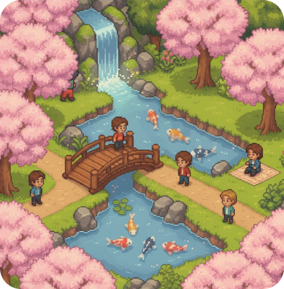
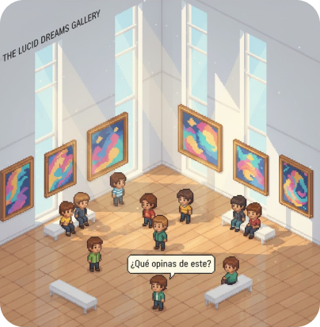

© 2025-2030 VCA, Inc. VCA, Kyonai y todos los logotipos relacionados son marcas y nombres comerciales, marcas de servicio o marcas registradas de VCA Inc.
AVISO DE PRIVACIDAD
TÉRMINOS DE SERVICIO
PREFERENCIAS DE COOKIES
Kyonai

Un hermoso jardín botánico de estilo japonés, lleno de cerezos en flor, pequeños puentes de madera y estanques con carpas koi. La atmósfera es serena y pacífica, ideal para paseos contemplativos y conversaciones tranquilas al lado de una cascada.
Una galería de arte moderna y espaciosa con paredes blancas y grandes ventanales. Las obras expuestas son abstractas y coloridas, invitando a la reflexión. Es un lugar perfecto para compartir opiniones sobre arte o simplemente disfrutar de la tranquilidad mientras observas.

© 2025-2030 VCA, Inc. VCA, Kyonai y todos los logotipos relacionados son marcas y nombres comerciales, marcas de servicio o marcas registradas de VCA Inc.
AVISO DE PRIVACIDAD
TÉRMINOS DE SERVICIO
PREFERENCIAS DE COOKIES